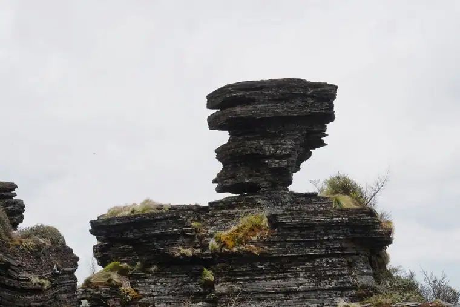
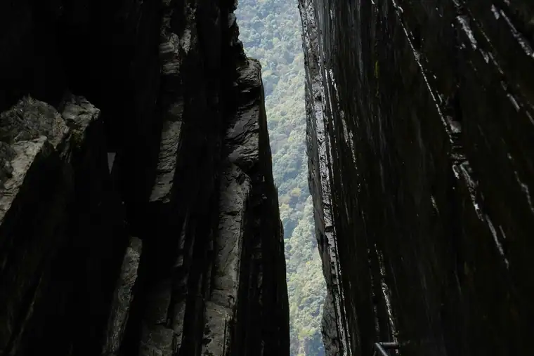
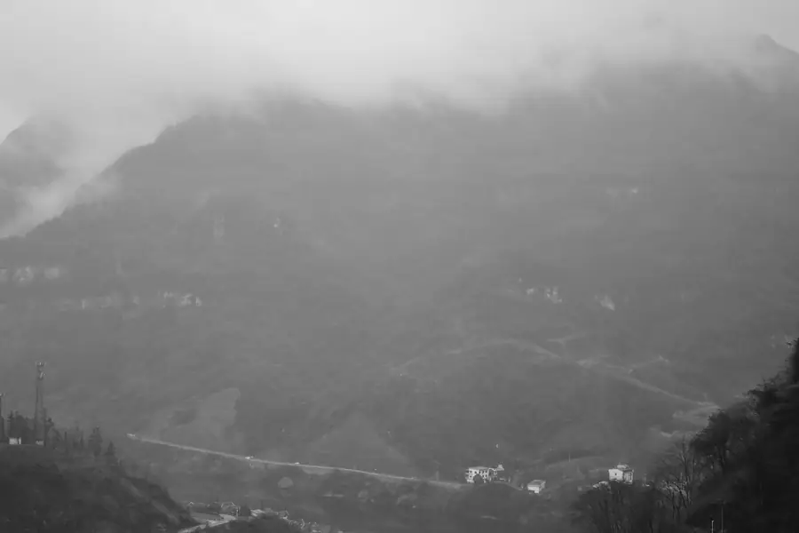

Tongren Airport Transfer & Private Car
Licensed professional driver in Guizhou's mountain city and UNESCO heritage gateway. Fixed price. Explore Mount Fanjing's legendary mushroom rocks, rare golden snub-nosed monkeys, and the ancient Yelang kingdom heritage with a private car and driver.
Tongren in Pictures
Real scenes from Tongren — landmarks, streets and everyday life.



Tongren at a Glance
Tongren (铜仁) — "Copper Benevolence" or "Copper Person" — is a prefecture-level city in northeastern Guizhou Province, on the border with Hunan Province, sitting in the Wuling Mountains (武陵山) region. Tongren is best known as the gateway to Mount Fanjing (梵净山) — Guizhou's first and only UNESCO World Natural Heritage Site — and as a city with deep heritage from the ancient Yelang Kingdom (夜郎古国) period.
Mount Fanjing — Guizhou's Sacred Mountain
Tongren's most important cultural and natural claim is as the gateway to Mount Fanjing (梵净山) — Guizhou Province's first and only UNESCO World Natural Heritage Site, inscribed in 2018. Fanjing Mountain (2,570m) is one of the most spectacular mountains in China — a remote, heavily forested peak in the Wuling Mountains with extraordinary geological features, unique biodiversity, and ancient Buddhist temples.
The mountain's most famous features are the Mushroom Rocks (蘑菇石) — a cluster of precariously balanced granite boulders that have become the iconic symbol of Fanjing Mountain. The mushroom rocks — some as tall as 10 meters, balanced impossibly on narrow bases — were formed by millions of years of weathering and erosion and are unlike anything else in China. The mountain also has two summits connected by a narrow ridge with an ancient Buddhist monastery (承恩寺, Cheng'en Temple) perched at the top.
Name Origin
The name Tongren (铜仁) — "Copper Benevolence" or "Copper Person" — comes from the city's historical association with copper mining and the benevolent governance of the area. The character the ideal of good governance. The name was formally established during the Ming Dynasty (1368–1644 CE) when the prefecture was organized under this name.
Rare Wildlife — Guizhou's Natural Treasure
Mount Fanjing's isolation and varied altitude (from 500m to 2,570m) have created a remarkable range of habitats that support extraordinary biodiversity — including several species found nowhere else on Earth. The most famous is the Guizhou snub-nosed monkey (黔金丝猴, Rhinopithecus brelichi) — also known as the golden snub-nosed monkey — which lives only in the Fanjing Mountain area. There are estimated to be only around 700 individuals remaining in the wild, making this one of China's most endangered primates.
Other endemic species include the David's dove tree (珙桐, Davidia involucrata) — also called the "ghost dove tree" for its distinctive white bracts — which blooms spectacularly on the mountain in spring. The mountain also has the rare Fanjing mountain cloud leopard, and over 3,000 plant species including many ancient relict species.
Geography & Location
Tongren is located in northeastern Guizhou Province, on the border with Hunan Province, in the heart of the Wuling Mountains (武陵山). The city sits in a mountainous area — valleys, gorges, and plateaus — carved by the Jin River (锦江), the upper tributary of the Yuan River (沅江). The landscape is dramatic — steep forested slopes, limestone karst formations, and river valleys. Tongren is approximately 400km from Guiyang (贵州's capital) and 300km from Zhangjiajie (张家界) in Hunan Province.
Tongren's Best Photo Spots
Capture Guizhou's mountain city and UNESCO heritage site from its most evocative angles.
🏔️ Mount Fanjing — Mushroom Rocks at Sunrise
Best at sunrise
The Mushroom Rocks (蘑菇石) at the summit of Mount Fanjing — precariously balanced granite boulders up to 10 meters tall — are most dramatic at sunrise when the first light illuminates the rocks against the sea of mist below. The summit of Fanjing Mountain is often above the cloud layer, creating extraordinary views of the cloud sea surrounding the mountain peaks. Arrive at the summit for sunrise to capture the most dramatic light.
🏯 Jiaxiu Tower — Illuminated Night View
Best at night
The Jiaxiu Tower (甲秀楼) on the Jin River is at its most beautiful when illuminated at night — the three-story wooden pavilion reflects in the dark water of the river, and the traditional bridge arch creates a classic Chinese architectural composition. The best viewpoint is from the riverbank promenade, where you can capture both the tower and its reflection in a single frame.
🌸 Dove Trees in Spring Bloom
Best in April–May
The David's dove trees (珙桐, Davidia involucrata) — also called "ghost dove trees" for their distinctive white bracts that resemble doves in flight — bloom spectacularly on Mount Fanjing in April and May. The sight of hundreds of these trees in bloom — their white bracts hanging like hundreds of white butterflies in the forest — is one of the most beautiful botanical displays in China. Photography at the mountain's nature reserve area during the bloom season is extraordinary.
🐒 Guizhou Snub-Nosed Monkey
Best early morning
The Guizhou snub-nosed monkeys (黔金丝猴) — one of the world's most endangered primates with only around 700 individuals — are most active early in the morning and late in the afternoon. The monkey observation platforms on Mount Fanjing give the best views. The monkeys have a distinctive gray coat and a very gentle, almost human expression. Patience is required — they can be elusive, but when spotted they are extraordinary photographic subjects.
🌊 Jin River — Misty Morning
Best at dawn
The Jin River (锦江) flowing through Tongren city — with the morning mist rising from the water and the city's buildings emerging in the background — is most atmospheric at dawn. The combination of river, mist, traditional bridge, and modern city skyline makes for compelling landscape photography. The riverbank promenade is the best viewpoint for morning mist shots.
⛩️ Cheng'en Temple — Summit Monastery
Best with available light
The Cheng'en Temple (承恩寺) — the ancient Buddhist monastery perched at the summit of Mount Fanjing — is most atmospheric when the morning mist clears to reveal the temple complex above the cloud layer. The temple's position — seemingly suspended between earth and sky — against the backdrop of Fanjing Mountain's dramatic peaks is one of the most memorable images in Guizhou. Wide-angle lenses are essential.
Top Tongren Attractions
From historic sites to local flavours, here is what Tongren is known for.
Popular Tongren Routes
Fixed-price private car service for Tongren's most popular journeys.
🗼 Tongren Railway Station → City Center
From ¥164($23.1)~5 km · 15 min · Economy/Business/MPV
Tongren Railway Station (铜仁站) is on the Shanghai–Kunming high-speed rail corridor, with services to Guiyang (2 hours), Zhangjiajie (2.5 hours), and the broader national rail network. Your driver meets you at the station exit with a name board and drives directly to your Tongren hotel or to the Mount Fanjing direction.
🏯 Mount Fanjing Full-Day Hike
From ¥164($23.1)~85 km · 1.5 hr drive · 5–7 hours · Business vehicle
Your driver takes you to Mount Fanjing (梵净山) — approximately 85km from Tongren — for a full day exploring the UNESCO World Heritage Site. The driver waits while you hike to the Mushroom Rocks, visit the ancient Buddhist temple at the summit, and look for the Guizhou snub-nosed monkeys. The full circuit of the mountain's main attractions takes 5–7 hours of hiking.
🗼 Tongren City & Jiaxiu Tower Half-Day
From ¥312($43.94)~10 km · 3–4 hours · City tour
Your driver takes you on a half-day tour of Tongren's city highlights: the Jiaxiu Tower on the Jin River, the riverside promenade, the Tongren Museum, and the old city lanes. This is a good introduction to the city and can be combined with a visit to the Fanjing Mountain area on a second day.
⛰️ Guiyang Airport Transfer
From ¥164($23.1)~250 km · 3.5 hr drive · Airport transfer
Your driver meets you at Guiyang Longdongbao International Airport (KWE) with a name board and drives you directly to your Tongren hotel. The drive takes approximately 3.5 hours via the Guiyang–Tongren Expressway. This is the most comfortable option for visitors arriving by air who want to reach Tongren without the hassle of public transit connections.
Transparent Pricing in Tongren
Published rates, no estimate games. Check the numbers yourself before you book — and the price you see is the price your driver is paid from.
Fixed Price List — 铜仁 (Tongren)
Published rates from our 2026 quote sheet. Renminbi first, USD for reference at 1 USD = ¥7.10. Every price below already includes tolls, parking, driver service and free airport waiting time (up to 60 minutes after your flight lands) — nothing is added on the day.
🛬 Airport & Intercity Transfer
One flat fare for airport pickup, drop-off or city-to-city — intercity costs the same as the airport run. 35 km and 60 minutes included; beyond that we charge by the minute and the kilometre at the rates shown.
| Vehicle | Seats | Bags | Fixed fare | USD | Beyond 35 km / 60 min |
|---|---|---|---|---|---|
| 4-seat Economy Sedan | 4 | 2 | ¥164 | ≈ $23.1 | ¥0.77/min · ¥3.65/km |
| 4-seat Comfort Sedan | 4 | 2 | ¥234 | ≈ $32.96 | ¥0.86/min · ¥4.03/km |
| 6-seat Business Van | 6 | 3 | ¥286 | ≈ $40.28 | ¥0.91/min · ¥4.29/km |
| 8-11-seat Business Van | 11 | 4 | ¥484 | ≈ $68.17 | ¥1.18/min · ¥5.58/km |
| 12-18-seat Minibus | 18 | 4 | ¥562 | ≈ $79.15 | ¥1.32/min · ¥6.22/km |
| 19-55-seat Coach Bus | 55 | 5 | ¥593 | ≈ $83.52 | ¥1.5/min · ¥7.08/km |
🚗 Hourly Private Charter
Book the car and the hours, keep the car for the day. Unused kilometres can be carried into the next tier, so a long day never turns into a penalty. The driver stays with you — you set the stops.
| Vehicle | 2h / 35km | 4h / 50km | 6h / 75km | 8h / 100km | 10h / 125km |
|---|---|---|---|---|---|
| 4-seat Private Car | ¥195 | ¥312 | ¥403 | ¥468 | ¥494 |
| 6-seat Business Van | ¥260 | ¥403 | ¥520 | ¥611 | ¥637 |
| 8-11-seat Business Van | ¥374 | ¥580 | ¥749 | ¥880 | ¥917 |
| 12-18-seat Minibus | ¥449 | ¥696 | ¥899 | ¥1056 | ¥1101 |
| 19-55-seat Coach Bus | ¥539 | ¥836 | ¥1078 | ¥1267 | ¥1321 |
Why travellers book Tongren with Chinawheely
Six things you get with every booking — in Tongren and across all 346 cities on the platform.
Licensed travel agency, not a ride-hail app
Chinawheely is a registered travel agency (L-HUB-101603). Your booking is a travel contract with a licensed operator — not a broker handing your number to whoever answers the phone.
One locked price, shown before you pay
The price you see is the price you pay. Tolls, parking, driver service and airport waiting time are already inside it. No surge pricing, no meter, no cash-on-the-day surprise.
Flight tracked, waiting time on us
We watch your flight number in real time. If it lands late or is delayed, your driver shifts with it and the waiting time stays on us — not on your bill.
A licensed driver who knows the city
Every car is driven by a professional local driver who knows the routes, the shortcuts and the parking that actually works near the attractions — with English communication and a name board on arrival.
Free changes up to 48 hours before
Plans move. Reschedule or cancel any booking free of charge up to 48 hours before your scheduled pickup, straight from your confirmation link.
A real human on WhatsApp, 8AM–12AM Beijing time
One message reaches a person who can re-price, re-route or re-plan your trip on the spot. No ticket queue, no chatbot loop.
Book Tongren at the published price
Pick your vehicle, see the fare line by line, and pay by PayPal or Alipay. Free changes up to 48 hours before pickup — or ask on WhatsApp and we will hold a car for you.
The quote is valid for 48 hours, and you can change or cancel free up to 48 hours before pickup.
Getting to Tongren: Airports & Railway Stations
Getting to Tongren by air, rail, or road
🚄 Tongren Railway Station
🗼 Tongren Railway Station (铜仁站) & Tongren South (铜仁南站)
High-speed rail hub · Shanghai–Kunming corridor
Tongren Railway Station (铜仁站) and Tongren South Station (铜仁南站) are on the Shanghai–Kunming high-speed rail corridor, with frequent high-speed services to Guiyang (2 hours), Zhangjiajie (2.5 hours), and direct services to Shanghai, Changsha, and Kunming. Tongren has no major commercial airport — the nearest major airport is Guiyang Longdongbao Airport (KWE, 250km, 3.5 hours by car). Tongren's small Tongren Fenghuang Airport (TEN) has limited regional flights.
✈️ Nearest Airports
⛰️ Guiyang Longdongbao International Airport (KWE)
~250 km · 3.5 hr drive
Guiyang Longdongbao International Airport (KWE) is the primary commercial airport serving Tongren visitors — Tongren does not have significant direct commercial flights. KWE handles both domestic and international flights and is Guizhou Province's main aviation hub. A private car from KWE to Tongren takes approximately 3.5 hours via the Guiyang–Tongren Expressway. This is the most practical option for visitors arriving from overseas.
🌊 Tongren Fenghuang Airport (TEN)
~20 km · 40 min drive
Tongren Fenghuang Airport (TEN) — a small regional airport — has limited flights, mainly to Guiyang and a few other Chinese cities. It is not a practical option for most international visitors. If your flight happens to arrive at Fenghuang Airport, your driver will meet you there for the short 40-minute drive to central Tongren.
🌊 Zhangjiajie Hehua Airport (DYG)
~200 km · 3 hr drive
Zhangjiajie Hehua Airport (DYG) in neighboring Hunan Province is an alternative for visitors combining Tongren/Fanjing Mountain with a visit to Zhangjiajie's famous sandstone pillar mountains(DYG, 200km, 3 hours). This is a longer drive but useful if you are visiting both the Fanjing Mountain and Zhangjiajie UNESCO sites in one trip. A private car allows you to visit both UNESCO sites on your own schedule without backtracking.
Food & Shopping in Tongren
🍜 Must-Try Tongren & Guizhou Cuisine
Sour Soup Fish (酸汤鱼)
The signature dish of the Tongren and broader Guizhou area is sour soup fish (酸汤鱼) — fresh river fish cooked in a fermentation-based sour broth (酸汤, suān tāng) with chili, ginger, and local herbs. The sour broth is made by fermenting rice water and tomato, giving it a distinctive tangy, spicy, and savory flavor. Found at restaurants throughout Tongren, particularly near the riverfront area.
Spicy Crab (辣子蟹)
The rivers of the Tongren area produce excellent fresh river crabs — prepared in the local spicy stir-fry style (辣子蟹) with abundant dried chili, Sichuan pepper, and garlic. The crab is typically stir-fried until the shell is crispy and the meat is tender. A seasonal specialty (autumn is the best time for river crabs) found at riverside restaurants in Tongren.
Miao Sticky Rice Cakes (苗家糍粑)
The Miao ethnic group (苗族) is a significant minority population in the Tongren area, and Miao sticky rice cakes (苗家糍粑, cí bā) — pounded glutinous rice cakes often served grilled or fried with sweet or savory toppings — are a traditional food of Miao festivals and celebrations. Found at Miao village restaurants near Tongren and at the Fanjing Mountain area.
Wuling Mountain Wild Mushroom (武陵山野生菌)
The Wuling Mountains around Tongren produce excellent wild mushrooms — including matsutake, chanterelles, and boletus — during the summer and autumn rainy season. Wild mushroom hotpot (野生菌火锅) — with a clear broth that lets the mushroom flavor speak for itself — is the definitive seasonal food experience in the Tongren area. Best in July–October.
Guizhou Rice Noodles (贵州米粉)
Guizhou's rice noodles (米粉) are a breakfast and comfort food staple throughout the province, including Tongren. The noodles — thin rice noodles in a savory broth with various toppings — are found at morning markets and noodle shops throughout the city. The Guizhou version is distinguished by the use of local chili oil and the málà (numbing and spicy) flavor profile characteristic of the region.
🛍️ Shopping Destinations
Fanjing Mountain Souvenir Market
At the base of Mount Fanjing, the souvenir market sells local products from the Wuling Mountain area — including wild mushrooms, dried herbs, local honey, and crafts made by Miao artisans. The best products are the wild mushrooms (seasonal) and the Miao silver ornaments and embroidered textiles. Buy wild mushroom products from established stalls with clear labeling.
Tongren Riverside Night Market
The Tongren Riverside Night Market — along the Jin River waterfront — is the best place to experience the city's street food and buy local products in the evening. The market has dozens of food stalls selling local specialties, fresh fruit, and small daily items. Open from around 5 PM until 10 PM.
🎁 What to Buy in Tongren
Wuling Mountain Wild Honey
The forested Wuling Mountains produce high-quality wildflower honey — sold at markets and specialty shops in Tongren. The honey is typically raw, unfiltered, and from the diverse floral sources of the mountain forests. Buy at the morning market or from established specialty shops for the best quality.
Miao Embroidery & Silver Ornaments
The Miao ethnic minority in the Tongren area produces distinctive embroidery (苗绣) and silver ornaments (苗族银饰). Miao embroidery — featuring bold geometric patterns and vibrant colors — is used to decorate clothing, bags, and wall hangings. Miao silver ornaments — including necklaces, bracelets, and hair ornaments — are handcrafted using traditional techniques. The best selection is found at Miao village craft shops near Fanjing Mountain.
Guizhou Baijiu (贵州白酒)
Guizhou Province is famous for Moutai (茅台) baijiu — China's most famous luxury baijiu, produced in Renhuai County near Tongren. While genuine high-end Moutai is very expensive, more accessible Guizhou baijiu products — from the same region and production tradition — are sold at good prices in Tongren. Buy from established alcohol retailers.
Intangible Cultural Heritage & Living Crafts of Tongren
Traditional crafts and cultural traditions of Guizhou's mountain city and UNESCO heritage gateway.
🥻 Miao Embroidery (苗绣)
Miao embroidery (苗绣) — one of China's most distinctive regional embroidery traditions — is practiced throughout the Tongren area, where the Miao ethnic minority is a significant population. Miao embroidery is characterized by its bold geometric patterns, its vibrant use of color (red, green, yellow, and blue on a dark ground), and its symbolic motifs including the butterfly mother (蝴蝶妈妈, the Miao creation myth figure), the dragon, and the fish. The embroidery is used to decorate clothing, particularly the elaborate festival costumes worn by Miao women.
Where to find: Miao villages near Fanjing Mountain, Fanjing Mountain souvenir market, Tongren Museum cultural shop.
⛩️ Fanjing Mountain Buddhist Temple Rituals
The Buddhist temple complex on Mount Fanjing (承恩寺) — dating to the Ming Dynasty (1368–1644 CE) and rebuilt several times — is one of the most important Buddhist sites in Guizhou Province. The temple's location at the summit of a sacred mountain — seemingly suspended above the cloud layer — makes it a place of deep religious significance. Daily Buddhist rituals (诵经, sòng jīng) are still practiced at the temple, and the annual Buddhist festivals attract pilgrims from across the region.
Where to see: Cheng'en Temple, Mount Fanjing summit.
🎭 Miao Silver Ornaments Making (苗族银饰)
The craft of making Miao silver ornaments — including necklaces (银项链), bracelets (银手镯), hair ornaments (银发饰), and the elaborate Miao crown (银冠) — is a significant traditional craft in the Tongren area. Miao silver ornaments are handmade using traditional silversmithing techniques — hammering, filigree, and engraving — and are an essential part of Miao ceremonial dress. The ornaments are particularly elaborate for festival costumes, where a full set of silver ornaments can weigh several kilograms.
Where to find: Miao craft shops near Fanjing Mountain, Miao villages.
🥁 Miao Silver-Bell Dance (银铃舞)
The Miao silver-bell dance (银铃舞, yín líng wǔ) — performed by Miao women in traditional silver ornaments and festive dress — involves dancing to the sound of the silver bells (银铃) attached to the costume. The dance is performed at Miao festivals (苗年, Miáo nián) and celebrations, and the synchronized sound of hundreds of silver bells creates a distinctive musical texture. The dance is a key part of the Miao cultural identity in the Tongren area.
Where to see: Miao festivals, cultural performances in Miao villages near Tongren.
🍜 Sour Soup Fish Making (酸汤鱼制作技艺)
The craft of making the signature Tongren/Guizhou sour soup fish (酸汤鱼) — the specific fermentation process for the sour broth, the selection of fresh river fish, and the combination of local herbs and spices — is a culinary tradition passed down through restaurant families. The fermentation of the rice-tomato broth (酸汤, suān tāng) is the key skill — the broth must achieve the right balance of sour, spicy, and savory flavors. Each restaurant has its own family fermentation tradition.
Where to experience: Riverside restaurants in Tongren city, restaurants near Fanjing Mountain.
🌲 Ancient Forest Conservation Knowledge
The traditional knowledge of the Fanjing Mountain forests — including which plants have medicinal properties, which mushrooms are edible, and which forest areas are sacred or protected — has been developed over centuries by local communities. This knowledge — passed down through generations — is documented in the Mount Fanjing Nature Reserve's educational programs and the Tongren Museum's ethnobotanical exhibits. The conservation of these ancient forest ecosystems is inseparable from the cultural knowledge of the local communities.
Where to learn: Tongren Museum, Mount Fanjing Nature Reserve visitor center.
Tongren Local Secrets
Insider tips to help you experience Tongren like a local.
Go to Fanjing Mountain on a Weekday
Mount Fanjing is extremely popular with Chinese tourists — particularly on weekends and public holidays. The mushroom rocks viewing platform can have queues of over an hour on busy days. The best experience is to visit on a weekday, arrive at the park entrance at opening time (around 8 AM), and take the first cable car to the summit. You will have the mushroom rocks almost to yourself in the early morning.
Eat Sour Soup Fish at the Riverside
The best sour soup fish (酸汤鱼) in Tongren is served at the small riverside restaurants along the Jin River — family-run places that have been perfecting their family broth recipe for generations. Follow the locals — if there's a queue, it's the right place. The fish is fresh from the river and the sour broth is tangy, spicy, and deeply savory. Eat with rice and local vegetables for the full experience.
Look for Monkeys at Dawn or Dusk
The Guizhou snub-nosed monkeys on Fanjing Mountain are most active — and most visible — in the early morning (7–9 AM) and late afternoon (4–6 PM). During the middle of the day, they retreat into the dense forest canopy. To maximize your chances of seeing them, plan your mountain visit to be on the mountain during these peak activity times. The monkey observation platforms on the mountain's western slope are the best viewing areas.
Come in April or May for the Dove Trees
If you want to photograph the famous David's dove trees (珙桐, Davidia involucrata) in bloom, plan your visit to Fanjing Mountain in April or May — the white bracts (which look like white doves in flight) bloom during this period. The sight of hundreds of these trees in bloom — covering the mountain slopes in white — is one of the most beautiful botanical spectacles in China. Summer (July–September) is also excellent for wild mushrooms.
Stay Until Night for the Jiaxiu Tower
Many visitors see the Jiaxiu Tower during the day and miss its most beautiful aspect — the illuminated tower at night. After dinner at one of the riverside restaurants, walk to the riverbank promenade and see the tower lit up with its reflection in the dark water. The combination of the traditional pavilion, the arch bridge, and the modern city skyline behind creates a classic Chinese urban landscape image.
Ask About Miao Festivals
The Miao people in the Tongren area celebrate several festivals during the year — including Miao New Year (苗年, typically in October or November based on the lunar calendar) and the Silver-Bell Festival (银铃节). These festivals — with their elaborate costumes, silver ornaments, silver-bell dancing, and bullfighting — are extraordinary cultural experiences. Your driver can tell you if any festivals are coming up during your visit and can arrange a visit to a Miao village during a festival.
Day Trips from Tongren
Real destinations around Tongren, reached comfortably with a private car and a licensed professional driver.
Best Time to Visit Tongren
The climate record of Tongren decides when the city is at its most comfortable to walk.
The annual average temperature is 17.3 °C; annual rainfall averages 1,233 mm; July is the hottest month at 27.9 °C; January the coldest at 5.7 °C; The climate pattern includes The monsoon, highland conditions.
Spring
Monthly means in March, April, May run 12–22 °C. Rainfall over those three months totals about 365 mm.
Summer
Monthly means in June, July, August run 25–28 °C. Rainfall over those three months totals about 525 mm.
Autumn
Monthly means in September, October, November run 13–24 °C. Rainfall over those three months totals about 226 mm.
Winter
Monthly means in December, January, February run 6–8 °C. Rainfall over those three months totals about 116 mm.
Useful Chinese Phrases for Tongren
A few words for Guizhou's mountain city.
👋 Nǐ hǎo
你好
Hello — The universal greeting.
🙏 Xièxiè
谢谢
Thank you — Locals appreciate the effort.
🏔️ Wǒ yào qù fànjìng shān
我要去梵净山
I want to go to Mount Fanjing — Tell your driver you'd like to visit the UNESCO World Heritage mountain.
🍜 Wǒ yào chī suān tāng yú
我要吃酸汤鱼
I want to eat sour soup fish — Tongren's signature dish. Essential for the local food experience.
🌿 Yǒu yěshēng jūnpín ma?
有野生菌品吗？
Do you have wild mushrooms? — Ask in summer and autumn for the seasonal wild mushroom dishes.
💰 Duōshao qián?
多少钱？
How much is this? — Essential for the Fanjing Mountain souvenir market.
Book Your Tongren Transfer
Fixed price, licensed professional driver. From Tongren Railway Station or Guiyang Airport to Mount Fanjing, the Guizhou snub-nosed monkeys, and the ancient Yelang heritage.
Get Instant QuoteQuestions? WhatsApp +86-155-2777-1775
Travel Essentials for Your Tongren Trip
Make your Tongren Fanjing Mountain and UNESCO heritage journey smoother with these services.
Mobile Pocket Wi-Fi
Stay connected across Guizhou with a pocket Wi-Fi device. Pre-book online and pick up at Guiyang Airport or have it delivered to your Tongren hotel. Wi-Fi is essential for navigation on Fanjing Mountain.
Book Wi-Fi at ChinaWiFiGoEnglish-Speaking Guide
Explore Mount Fanjing and the Guizhou snub-nosed monkey reserve with a professional English-speaking guide who knows the mountain's geology, biodiversity, and cultural history.
Book Guide at VIPChinaGuideMedical Services
Add a health checkup, dental cleaning, or traditional Chinese medicine session to your Tongren trip. Guiyang has excellent international-standard medical services, about 3.5 hours from Tongren.
Book Medical at MediEscortChinaMore China destinations
Compare routes, published prices and local driver tips across the cities we cover.